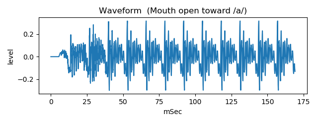
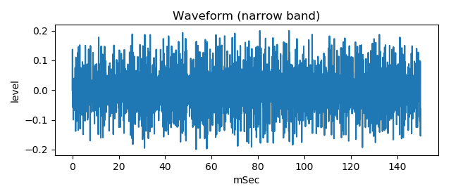
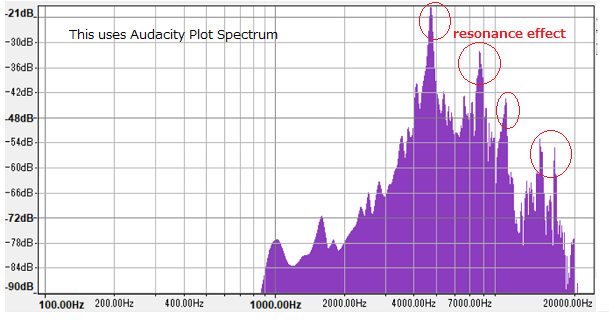

vocal tract tube noise model
This is an experiment to generate fricative voice /sa/ sound by two tubes model and noise source instead of turbulent sound.
usage
The voice /sa/ sound consists of two parts, that are preceding noise sound and following vowel sound.
Generate following vowel sound
python3 main2var.py

Generate preceding noise sound, using perlin noise
python3 PerlinNoise.py

Apply resonance effect to the noise
python3 main2noiseresona.py

Combine preceding noise sound and following vowel sound
python3 make_sa.py

This will save sa_like.wav that sounds similar to voice /sa/ sound.
Generated sample
There are sample wav files of generated waveform in the generated_waveform folder.
Document
See Explain-E.pdf / Explain-J.pdf in the docs folder.
Related link
- Voice /sa/ sound waveform generation by two tubes model and noise source
- same content above in Japanese
- Speech Waveform Generation by SCILAB
License
MITRegarding to PerlinNoise.py, please follow the notice in the source code.